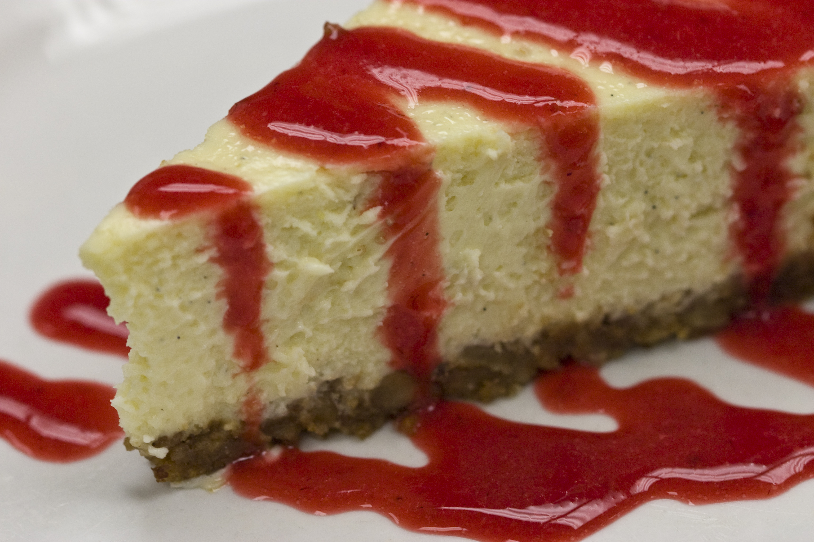

Cheesecake de Goiabada
Esta receita serve 8 porções

Ingredientes para a massa:
- 1 pacote de biscoito tipo maisena processado
- 1/4 de xícara (chá) de açúcar mascavo
- 1/2 xícara (chá) de margarina (90 g)
Ingredientes para o recheio:
- 3 ovos
- 2 embalagens de cream cheese (300 g)
- 150 g de açúcar
- suco de 1/2 limão
- 1/2 colher (chá) de essência de baunilha
Ingredientes para a cobertura:
- 300 g de goiabada em cubos
- 1/2 xícara (chá) de vinho branco
- suco de 1/2 limão
Modo de preparo:
- Junte o biscoito e o açúcar mascavo, misture com a margarina até formar uma massa homogênea.
- Com essa massa, forre uma forma de fundo removível de 23 cm de diâmetro, pressionando com uma colher para a superfície ficar lisa, e leve à geladeira.
- Bata ligeiramente os ovos na batedeira e acrescente os ingredientes restantes.
- Bata por 20 minutos em velocidade baixa.
- Espalhe o recheio na forma.
- Preaqueça o forno a 180º C e asse por 40 minutos ou até que a superfície doure.
- Aqueça a goiabada, o vinho, o suco de limão e 1/2 xícara (chá) de água, cozinhando em fogo baixo até que todos os grumos se dissolvam e a calda fique espessa.
- Deixe amornar e despeje sobre a torta.
- Enfeite o centro com fatias de goiaba e folhas de hortelã.
- Sirva frio.
Fonte: Tudo gostoso